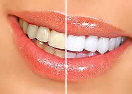
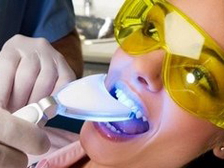
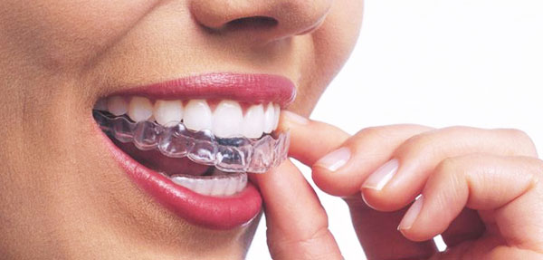
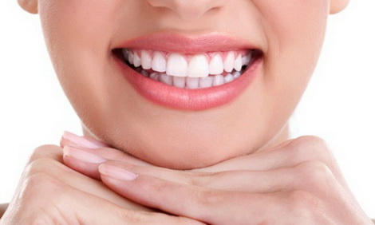
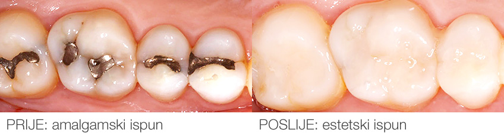
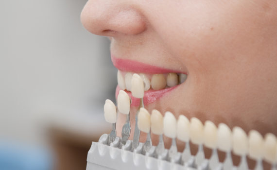

Bleaching

Teeth whitening is a procedure in which various dislocations from the surface of the teeth are removed,
and the very color of teeth becomes white. Only whitening is one of the most popular procedures in dentistry and can significantly improve the appearance.
The American Dental Association has announced its stance that says:
"Bleached teeth indicated by dentists carried out at home, preparations of renowned manufacturers,
and under the constant supervision of an expert in a relatively short time duration, it is absolutely safe and effective tooth whitening..
Teeth whitening technique in the clinic
laser (In office bleaching)

This technique involves the application of a tooth whitening gel in an office, using high concentration bleaches
in strictly controlled conditions, with soft tissue protection and laser activation of the gel.
In our practice we use biolase epix, the most famous American brand in the field of lasers. More on our site.
Technique of a controlled home
(home bleaching)

This is a procedure in which a patient in a dental office after taking a jaw fingerprint is produced with trays (teeth)
which serve as a bleach gel carrier at home. This procedure is very safe and simple because they are used
gels for bleaching weaker concentrations of world renowned manufacturers (Dentsply, Vivadent, Ultradent),
which do not impair soft tissue. home bleaching of the teeth Patient after a short training in the office very easily bleaches his teeth,
carrying an application tray filled with gel during the night or days coming to the occasional control of the dentist.
Although this technique is relatively simple and cheaper than laser bleaching, the results appear gradually and during bleaching
it is necessary to abstain from smoking and consuming stuffed matter (coffee, tea, car, red wine, fresh carrots, beets, etc.).

As an unwanted occurrence during teeth whitening, transient tooth sensitivity to colds that occurs in 50% of patients should be indicated.
In these cases, the patient is advised to reduce the frequency of wearing an application tray (instead of each - every other night)
reducing the concentration of gel bleaching and tooth treatments with dental sensitivity.
This phenomenon is always transient. After bleaching and stabilizing the tooth color (after at least two weeks)
all visible seals should be replaced because their color no longer corresponds to the color of the bleached teeth.
Avital teeth so called "dead teeth" are those who have taken the nerve from the root canal.
Over time, such teeth change color and become noticeably darker than the surrounding "living" teeth.
The procedure of bleaching these teeth lasts for several days and in most cases it is possible to restore the tooth to the old color and old glow.
Aesthetic Fill

Creation of aesthetic fillings (seals, inlay, onlay) is a regular procedure for repairing teeth of damaged caries or a simple trauma. Fills represent a part of aesthetic dentistry, because the development of dental materials allows the production of direct and indirect fillings made of composite materials and dental ceramics that fully match the colors of the natural teeth, thereby retaining the naturalness and aesthetics of the looks of your teeth and smile. Sometimes fillings are made of amalgams, but today, with the advancement of dental material technology, fillings or sealings in the teeth are used.
Facets

What are facets? Veneers or facets are a symbol of the modern and successful man of the 21st century. From the Hollywood stars to you, the facets have changed many smiles.
- Facets are thin ceramic flakes that are placed on the front surface of the teeth. The construction of the facet requires minimal preparation of the tooth surface because the facets are very thin, while the other surfaces of the tooth remain untouched, which is a much better biological solution than the preparation of teeth for the crochet.
- Special adhesive technique is fixed, ie beautiful on the tooth.
- With an adequate choice of color and facet design, we will give you a natural look and a more beautiful smile.
When is the facet the right solution for you?
- When you want to change the color, shape and size of your teeth
- in the case of tetracycline toothpaste that does not react to the bleaching process
- when you want to close the gap between your teeth
- when you want to restore broken or caries damaged tooth